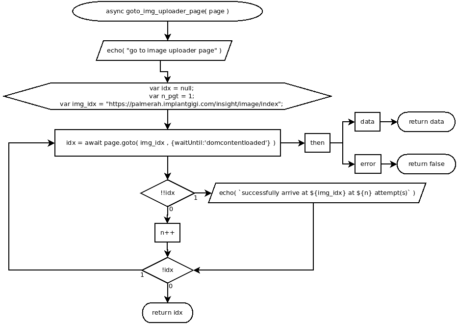

async goto_img_uploader_page( page )
Flowchart

Code
async goto_img_uploader_page( page ){
echo( "go to image uploader page" );
var idx = null;
var n_pgt = 1;
var img_idx = "https://palmerah.implantgigi.com/insight/image/index";
do{
idx = await page.goto( img_idx , {waitUntil:'domcontentloaded'} )
.then( async ( data )=>{ return data; } , async ( error )=>{ return false; } );
if( !!idx ){
echo( `successfully arrive at ${img_idx} at ${n} attempt(s)` );
} else {
n++;
}
} while( !idx );
return idx;
}